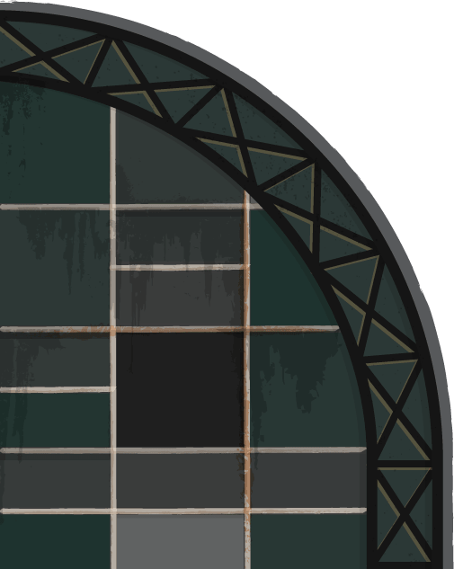
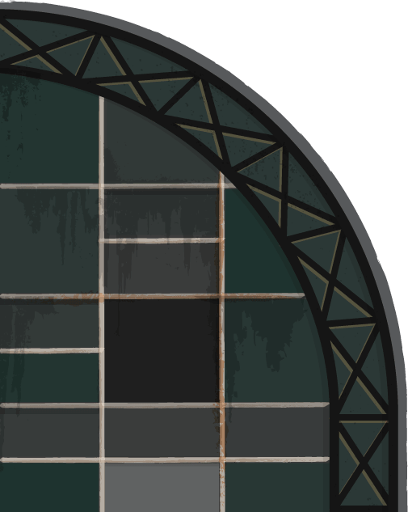

Registration
RubyConf Argentina is one of the largest conferences about software development in South America, where more than 450 hackers meet to learn, discuss and share thoughts on open source software, web, mobile apps, security, robotics, and a lot more.
Super early bird
Early bird
Lazy bird
AR$
1000
Regular
AR$
1200
What you get with your ticket:
- Admission to two days of talk sessions
- Access to any after-hour parties
- Official Conference T-Shirt and goodie bag
- Breakfast, lunch and snacks on both days
- Translation services
- Access to our fantastic attendees and speakers!